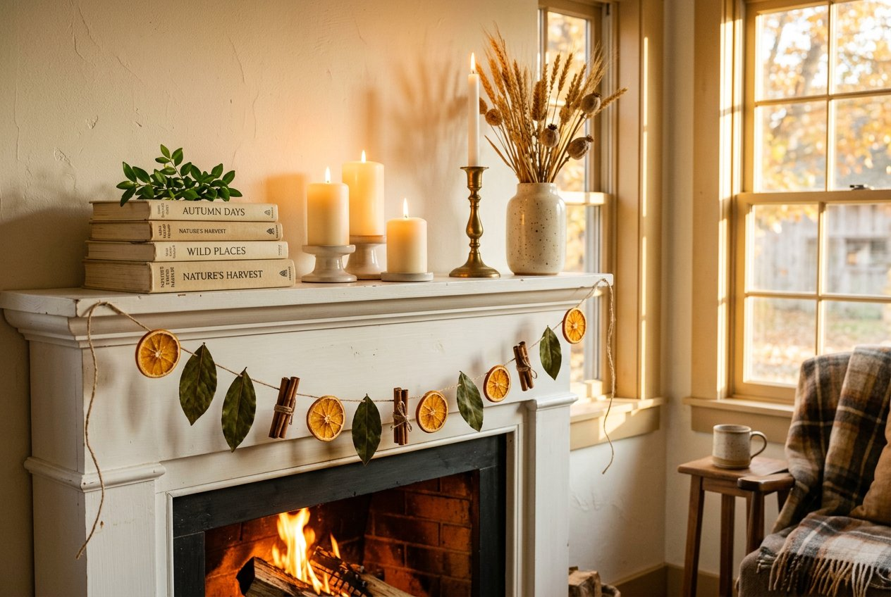
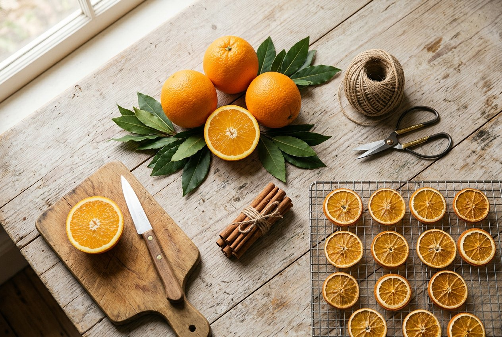
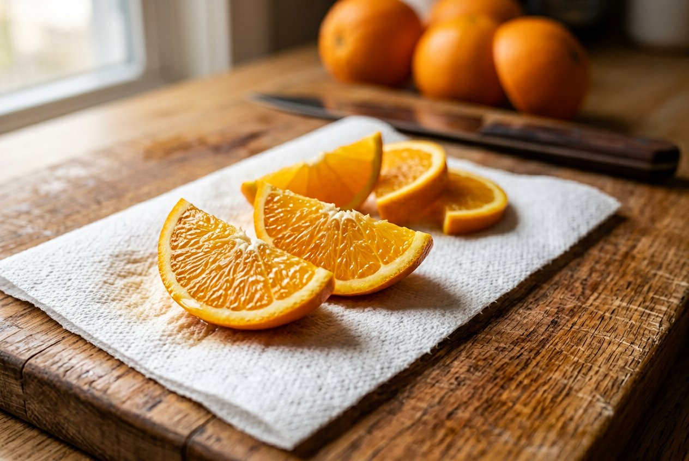
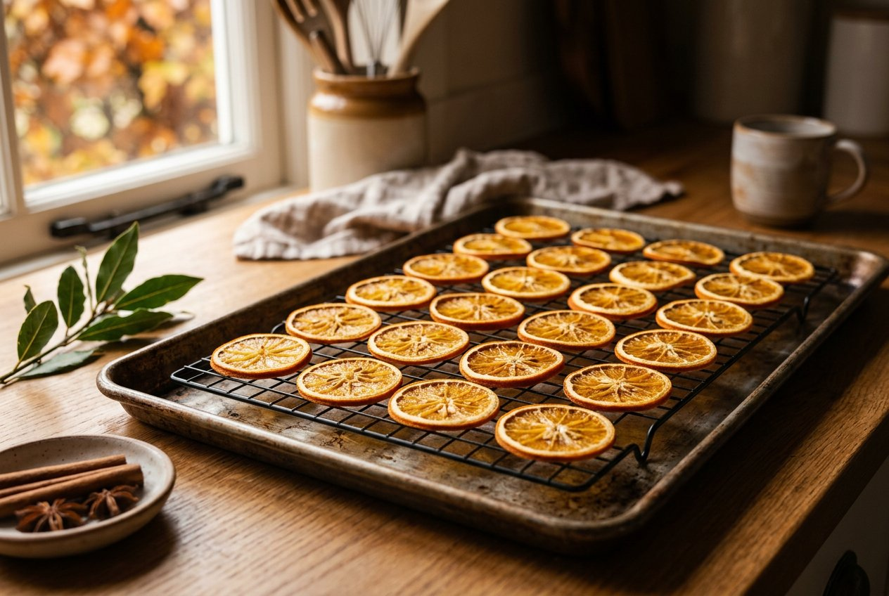
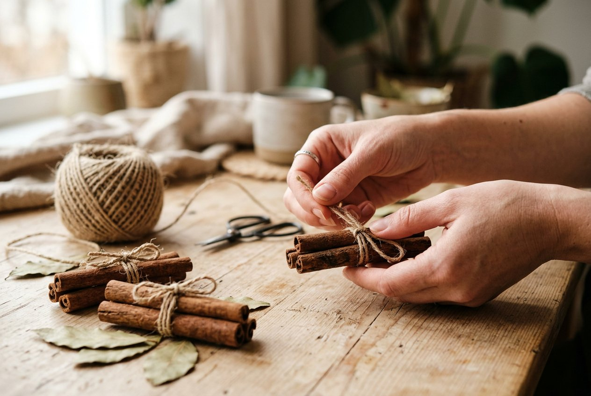
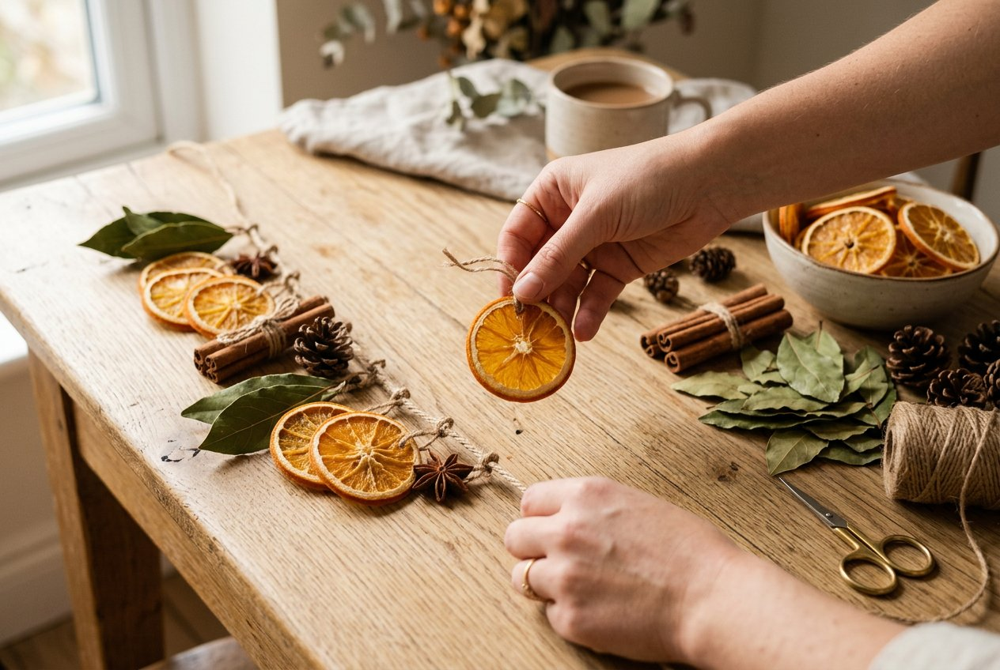
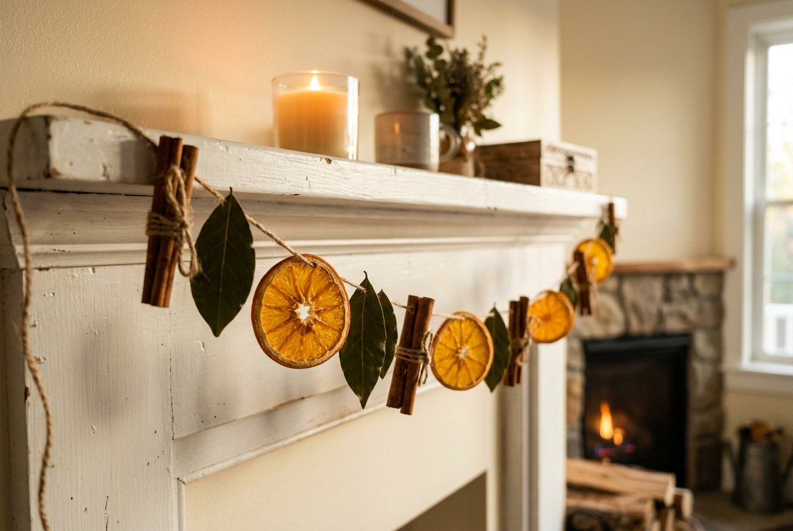
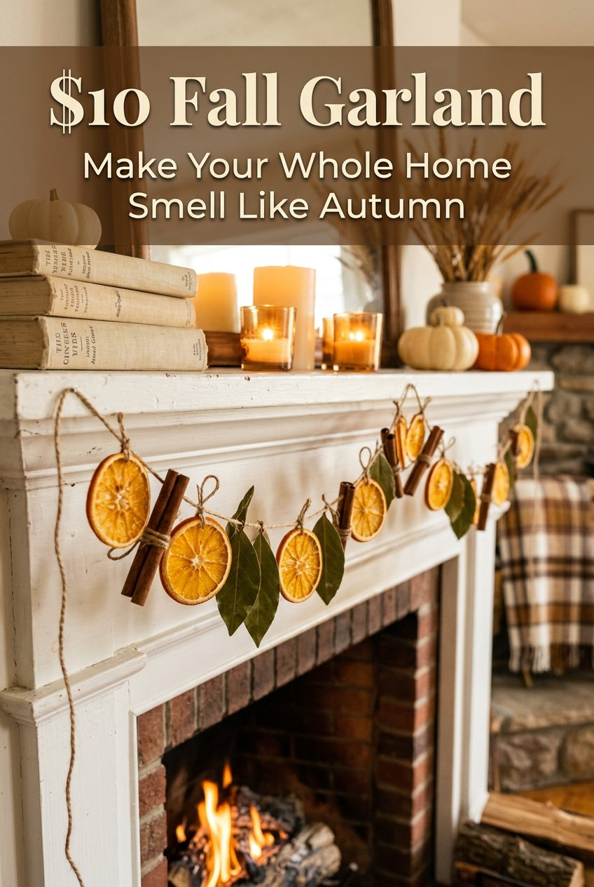

How to make a $10 fall garland that makes your whole home smell like autumn
Some fall decor looks good and does nothing else. A garland made from dried oranges, cinnamon sticks and bay leaves looks good and also changes how the room smells. Walk past it on a cool evening and you get warm citrus and spice, the kind of smell people usually pay a candle company for.

This version costs about $10, takes one afternoon, and needs no craft skills. If you can slice an orange and tie a knot, you can make it. Most of the time involved is waiting for the oven to dry the fruit, which means you are free to do something else while it works.
Below you'll find the full supply list with a price breakdown, the drying method, how to put the garland together, and how to get the most scent out of it. There is also a section on keeping it away from candle flames, because a garland made of dried fruit and twine burns, and the mantel in the photo above is full of candles.
What this garland is made of
Three ingredients do all the work, and each one has a job.
Dried orange slices give the garland its color. Held up to the window, they glow amber and look a bit like stained glass. They also carry most of the citrus smell, especially in the first week.
Cinnamon sticks supply the spice. Tied in little bundles of two or three, they break up the round shapes of the oranges and give you a dark brown that reads as autumn at a glance.
Bay leaves add the green. Without them the garland would be nothing but orange and brown, which is pretty but flat. A few dark leaves make the whole thing look fuller and more natural.
The twine holds everything and sets the overall style. Plain jute looks rustic and slightly farmhouse. If you want a cleaner look, use cream cotton string instead.
The $10 supply list and what it costs
Prices change by store and region, so treat these numbers as ballpark figures. A grocery store or a dollar store will get you all of it.
- 3 to 4 medium oranges, about $3 to $4. Navel oranges slice well and have a good size. Cheap ones are fine. You are drying them, so they don't need to be perfect.
- A small pack of cinnamon sticks, about $3 to $4. The jars in the baking aisle are usually the most expensive way to buy them. Look in the spice section for bagged sticks, or check the bulk bins if your store has them.
- Bay leaves, about $2 to $3. More on this below, because the type you buy changes how the garland looks.
- Jute twine, about $1 to $2. A small ball from a dollar store is enough, and you'll have some left over.
That adds up to roughly $9 to $13, and you can land on $10 if you shop carefully. If you already have twine in a drawer, you are well under budget.
You also need a few things you almost certainly own: a sharp knife, a cutting board, paper towels, a baking sheet, a wire cooling rack if you have one, a large needle or a skewer, and scissors.

A quick note on bay leaves
The dried bay leaves in the spice aisle are small and brittle, and they crack when you try to thread them. They work, but they are the weakest part of the design.
Fresh bay leaves are larger, they flex instead of snapping, and they dry naturally into a leathery dark green that looks good on a garland. If your grocery store or a local market sells them fresh, buy those. Press them flat under a heavy book for a few days if they start to curl.
If you can't find fresh bay, you have two other options. You can use the dried ones and handle them gently, punching the hole before you thread them. Or you can swap in another leaf you can get cheaply, such as eucalyptus stems or olive leaves. The garland will look a little different from the photo, but it will still work.
Step 1: Slice the oranges
Start with the fruit, since it takes the longest.
Wash the oranges and dry them. Use a sharp knife and cut them into rounds about a quarter inch (6 mm) thick. Thickness matters more than you'd think. Slices that are too thin turn brittle and curl at the edges. Slices that are too thick take forever to dry and can stay damp in the middle, which leads to mold later.
Try to keep every slice about the same thickness so they dry at the same rate. A serrated knife helps if your good knife slips on the peel. Discard the end pieces, which are mostly peel and don't look like much once dried. Each orange should give you six to eight good slices, and you need about 10 to 12 for a standard mantel garland, so three oranges is plenty. The fourth is a backup for slices that break or dry badly.
Lay the slices on a double layer of paper towels and press another towel on top. Blot them well. Removing the surface juice cuts a good chunk off the drying time and helps the slices stay bright instead of turning dark brown.

Step 2: Dry them in the oven
Set your oven to 200°F (95°C). If your oven's lowest setting is a little higher, that's fine, but watch the slices more closely.
Place a wire rack on a baking sheet and lay the slices on the rack in a single layer without overlapping. The rack lets air move around both sides, so you don't have to turn them as often. If you don't have a rack, line the baking sheet with parchment paper and flip the slices yourself.
Bake for two to four hours, depending on how juicy your oranges are and how thick you cut them. Flip the slices every 30 to 45 minutes. When they are done, the slices will feel dry and slightly leathery, the edges will be starting to curl, and the flesh will be translucent rather than wet. A slice that still feels damp or sticky in the middle needs more time.
Don't rush this with a hotter oven. High heat browns the sugars, and you end up with burnt, bitter-smelling slices instead of glowing amber ones. Low and slow gives you the color you see in the photo.
Turn off the oven and let the slices cool completely on the rack. They will crisp up a little more as they cool. If one still feels soft once it's cold, put it back in for another half hour.
If you don't want to run the oven for hours, you can air dry the slices instead. Lay them on a rack in a warm, dry spot, like near a heater vent, and give them several days, turning them daily. Air drying is slower and works best in dry climates. In humid weather, use the oven.

Your kitchen will smell good while this happens
You'll notice something about two hours into the drying. The kitchen starts to smell like orange peel and warm sugar. This is the first payoff of the project, and it comes before you've hung anything. If you want to push it further, put a small pot on the stove with a few cinnamon sticks, the orange ends you cut off, and some water, and keep it at a very gentle simmer. Add water as it cooks down, and never leave it unattended.
Step 3: Prepare the cinnamon bundles
While the oranges dry, make the cinnamon bundles.
Take two or three cinnamon sticks and line them up side by side. Cut a piece of twine about 8 inches (20 cm) long. Wrap it around the middle of the bundle two or three times and tie it in a tight knot. Trim the ends, but leave a little tail if you want a more handmade look.
Then use a second, longer piece of twine to hang each bundle. Tie one end around the middle of the bundle, right over the first knot, and leave a loop or tail that you will later attach to the main garland. Alternatively, you can skip the second piece and thread the bundle onto the main garland by tying the main twine around the bundle directly. Both work. The first method makes the bundles easier to space and adjust.
You'll need about four to six bundles for a 5 foot mantel. Cinnamon sticks are brittle and can split if you tie them too tight, so snug is enough.

Step 4: Plan the pattern before you tie anything
Cut your main piece of twine. For a mantel that is about 5 feet wide, cut 6 to 7 feet of twine. The extra length gives you room for the natural droop and for the knots at each end. If your mantel is longer, or you want a deeper swag, cut more. It's easier to trim than to add.
Before you attach anything, lay the twine out on a table and arrange the orange slices, leaves, and cinnamon bundles along it. The photo at the top of this post uses a loose repeating rhythm of orange, leaf, cinnamon, then orange again, and you can follow that or make your own. A garland looks best when the pieces are spaced evenly, roughly 5 to 6 inches apart, with the two end sections left bare so there's room to tie it to hooks.
Taking a quick photo of your arrangement on your phone helps. It's easy to lose track of the order once you start tying.
Step 5: Thread and tie
This is the longest part of the assembly, but it goes quickly once you get a rhythm.
For the orange slices, use a large needle or the tip of a skewer to poke a small hole through the peel edge near the top of each slice. Thread a short piece of twine through the hole, about 6 inches long, and tie it in a loop or knot. Then tie that loop onto the main garland. Using small separate loops lets each slice hang freely and turn a little, which is how the slices in the photo look.
For the bay leaves, poke a hole near the stem end and do the same thing. If you are using dried leaves, make the hole carefully with the needle held steady, since a sharp push can crack the leaf. A tiny dab of hot glue or a small piece of tape on the back of the leaf also works if threading doesn't go well, though it won't look quite as clean.
For the cinnamon bundles, tie their hanging twine onto the main garland at the spots you marked.
Work from one end to the other, and check the spacing as you go. Pull each knot snug, but not so tight that it crushes a leaf or slice. When you finish, hold the garland up by both ends and let it hang for a moment. If any piece sits crooked or too close to its neighbor, slide it or retie it now.

Step 6: Hang it
A mantel is the classic spot, and it's the one in the photo. Drape the garland across the front edge and let the middle sag naturally. Secure each end with a small removable adhesive hook on the side of the mantel, a nail, or a loop of twine tied around a mantel clip. If your mantel is wood, a small finishing nail or tack at each end is enough, since the garland is very light.
It also looks good in other places:
- Across a window frame, where the afternoon light makes the orange slices glow.
- Along a stair banister, tied at every second spoke or post.
- Over a doorway or an open shelf.
- Down the center of a dining table as a runner, with a few candles in jars at a safe distance.
Whichever spot you pick, keep the garland a safe distance from heat. More on that below.

How to style the mantel around it
A garland does most of the visual work, so the rest of the mantel can stay simple. The mantel in the reference photo uses a short list of objects, and it's a good template.
Start with height. Put a stack of old books at one end, ideally in cream or neutral covers, and rest a sprig of green on top. On the other side, place a tall brass candlestick with a white taper, and next to it a ceramic vase with dried stems. A few pillar candles in different heights fill the middle.
The color story stays tight. Cream, brass, soft green, and dried gold all sit comfortably next to the orange and brown of the garland. If you add too many other colors, the garland stops being the focus.
Keep the objects at different heights so your eye travels along the mantel instead of landing on one spot. And leave some empty space. A mantel with a few well-chosen pieces looks calmer and more expensive than one covered edge to edge.
Safety: keep the garland away from flames
This part matters, especially because the photo shows lit candles on the mantel.
Dried fruit, twine, and dried leaves are all flammable. Don't hang the garland where a candle flame could touch it or where a draft could blow it toward one. Keep open flames at least a foot away, and more if you can. Never leave burning candles unattended, and blow them out before you go to bed or leave the house.
If you love the look of candles with this garland, flameless LED candles are the simplest fix. Modern ones flicker convincingly and look nearly identical in photos. They also let you leave the display on all evening without worrying.
Keep the garland out of reach of small children and pets, too. Cinnamon sticks and dried citrus aren't something a toddler or a dog should chew on.
Making it smell stronger
The orange slices will smell good for the first week or two, and then the scent will fade. The cinnamon holds on longer. If you want the garland to keep perfuming the room, there are a few easy ways to refresh it.
Put two or three drops of cinnamon, sweet orange, or clove essential oil on the cinnamon sticks and the back of the orange slices. The dried material soaks it up. Do this about once a week, or when you notice the smell has faded. Keep the oil off the twine where it will stain, and don't use oil near anything you care about, since it can mark wood and painted surfaces.
If you have cats, check first. Several essential oils, including some citrus ones, can be harmful to them, and diffusing or applying oils in a home with a cat needs care.
Warmth helps too. Scent releases more when the air is warm, so a garland near a radiator or a sunny window will smell stronger than one in a cold hallway. If you want to turn it up for guests, a gentle simmer pot on the stove makes the whole house smell like fall for an evening.
How long it lasts and how to store it
Kept dry, a garland like this lasts the whole autumn season, and often longer. The orange slices will darken a little over time, and that is normal. They go from bright amber to a deeper, antique orange, which many people prefer.
Moisture is the real enemy. If a slice was not fully dry when you hung it, it can develop mold. If you see fuzzy spots or smell something sour, remove that slice right away. A garland hung in a humid room, such as over a kitchen sink or in a bathroom, is more likely to have problems.
At the end of the season, you can store the garland for next year. Lay it flat or loosely coil it in a box with some tissue paper, and keep it somewhere dry. Add a few silica gel packets if your climate is damp. Check it before you hang it again. If a few slices crumbled or went bad, swap in fresh ones. You can also just cut the pieces off, compost them, and make a new batch, since the whole project costs about $10.
Troubleshooting common problems
My orange slices turned dark brown. The oven was probably too hot, or the slices were left in too long. Drop the temperature next time and check them earlier. Blotting the slices well before baking also helps them keep their color.
The slices curled up like bowls. This usually means they were cut too thin or dried too fast. A quarter inch and a low oven should give you flatter slices. You can also press them under a heavy book while they cool.
The bay leaves keep cracking. They're too dry. Try fresh leaves, or soak the dried ones in warm water for a minute until they soften, then pat them dry and thread them.
The garland sags too much in the middle. Use a shorter piece of twine, or tie the pieces closer together so the weight spreads out. You can also tape the center to the mantel front with a small piece of clear tape.
The smell is too faint. Add cinnamon oil, tuck a few more cinnamon bundles into the garland, or run a simmer pot nearby.
Ways to change it up
Once you have the basic method, there are plenty of ways to make the garland your own.
You can add dried apple slices, which bake the same way and give you a paler yellow that pairs well with the oranges. Star anise pods look beautiful and smell warm and sweet. Whole cloves can be pushed into an orange slice's edge for a bit of texture. Dried cranberries, strung on a needle and thread, add small red accents. For a Christmas version, use more green and add a few pinecones.
If you want a longer garland for a staircase or a big window, double the supplies and the cost, and you'll still be at about $20. You can also make a small one for a bedroom shelf, a kitchen window, or a gift. A short version tied to a jar of cinnamon sticks is an easy present for a neighbor.
Final thoughts
A dried orange garland is a cheap project that makes a room feel finished. It costs about $10, it uses ingredients you can find at any grocery store, and the work is mostly waiting. When you're done, you have decor that looks good in photos and smells good in person.
Make the slices on a quiet weekend afternoon, tie the pieces together in the evening, and hang it before the weather turns cold. Then light a flameless candle nearby, and enjoy the smell of oranges and cinnamon every time you walk past.
Save this guide for later
Pin the image below to your fall decor or DIY board.

Save this idea for laterPin the graphic below to your ikea hacks & diy board so you can find it when you are ready to shop.
Copy-and-paste pin title & description
Pin title: How to make a $10 fall garland that makes your whole home smell like autumn
Pin description: Make a dried orange slice fall garland for about $10. This easy DIY uses oranges, cinnamon sticks, bay leaves and twine, and it makes your home smell like autumn. #fallgarland #driedorangegarland #diyfalldecor

Join the conversation
Comments
Anonymous on top — no login, no GitHub. GitHub comments below.
No comments yet — be the first!
Leave a comment — no login needed